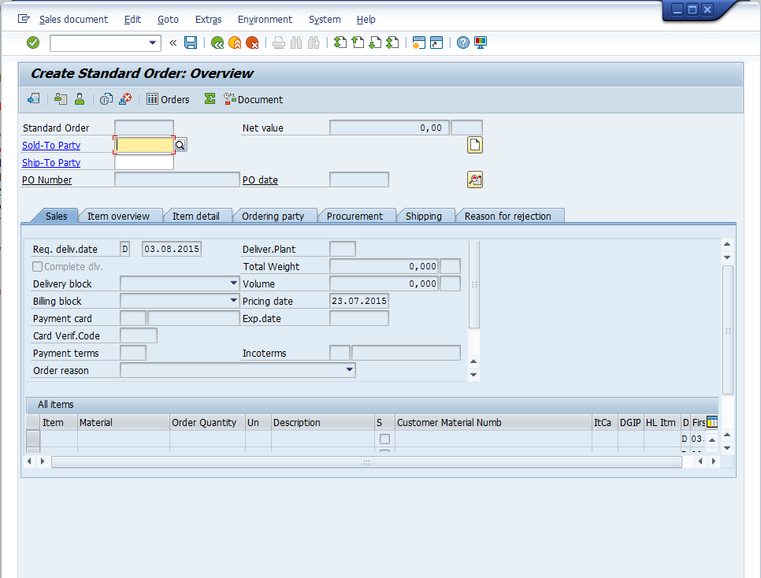
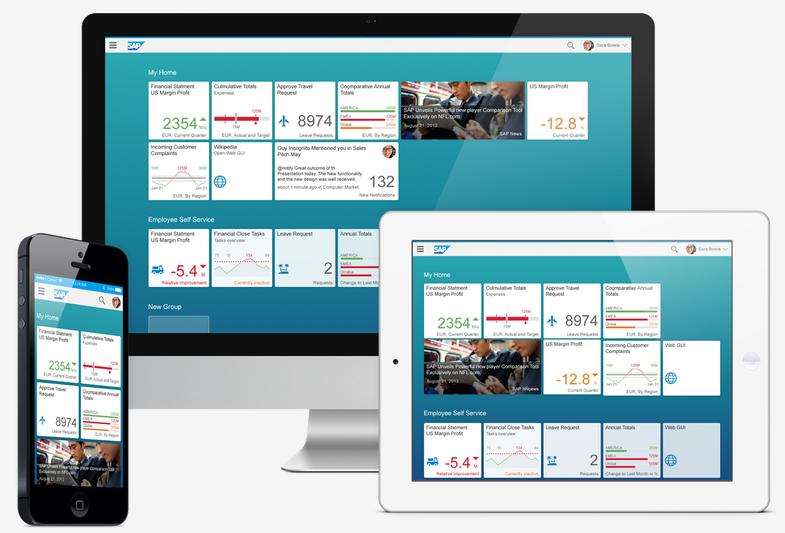
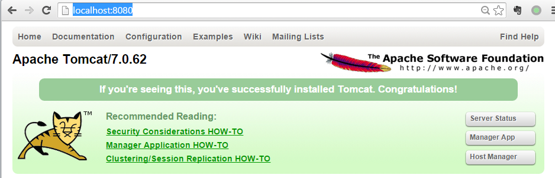
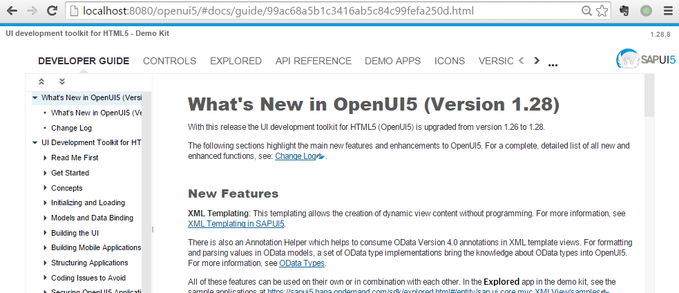
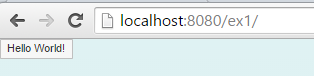

什么是SAP Fiori？ 了解SAP UI5必须要从SAP Fiori开始，两者概念经常被混淆，而两者也确实有着非常紧密的关系。
扫盲
什么是SAP Fiori？
了解SAP UI5必须要从SAP Fiori开始，两者概念经常被混淆，而两者也确实有着非常紧密的关系。 用过SAP的同学们都对SAP的传统的界面（SAP GUI）表示“呵呵”，其实传统的SAP GUI的界面功能还是很强大的，但是对于一个新用户来说，学会使用这套界面就需要花上一两 周的时间，所以SAP入门的第一步就是学会使用SAP GUI。此外，传统的SAP GUI只能在Windows和Mac上使用，对于移动端用户没有直接的解决方案，WEBGUI的体验也非常不好。

鉴于此，SAP开发了一整套新的用户交互系统（UX)，叫做SAP Fiori。SAP Fiori的官方定义如下:
SAP Fiori is the new user experience (UX) for SAP software that applies modern design principles. SAP solutions, such as the SAP Business Suite powered by SAP HANA, are using the SAP Fiori UX to provide a personalized, responsive, and simple user experience.
抓住几个关键字，
modern design principles就是符合当前的前端设计潮流，比如简洁化、平面化，personalized就是更个性化，更以用户为中心，每个用户的界面都 是不一样的，responsive可以自适应不同的终端，simple user experience也是最终目的，让用户使用起来最简单，一目了然。现在最新发布的SAP第四代ERP产品SAP S/4 HANA就是完全基于SAP Fiori。
如果想了解更多SAP Fiori的信息可以查看官网 以及 All Things SAP Fiori
什么SAP UI5、OPEN UI5？
SAP UI5是SAP UI Development Toolkit for HTML5的简称，它是一套基于HTML5的UI开发组件，是SAP为了快速开发前述的Fiori风格的UI、构建企业级产品的javascript框架， 拥有丰富的界面控件、CSS页面展示模板、上百个工业图标，同时支持控件的扩展。
那什么又是OPEN UI5？SAP基于Apache 2.0协议将这套控件贡献给开源社区，形成的开源版本叫做OPEN UI5，基本上这套版本主要还是由SAP更新，而SAP UI5和OPEN UI5的功能是 比较接近的，或者说OPEN UI5相比于SAP UI5来说，重要功能基本没有减少。
我们接下来不做区分，统称UI5，而由于OPEN UI5是开源的，所以基本上以后用到的库都会是基于OPEN UI5。
UI5和SAP Fiori是什么关系？
从两者的定义可以看出来，UI5是一个具体的前端框架，而SAP Fiori是一个前端交互标准，SAP官方基于UI5框架开发符合Fiori风格的App的合集一般称为SAP Fiori Apps。
搭建环境
简单的扫盲之后，我们来亲自创建一个UI5的应用吧。 工欲善其事必先利其器，首先我们要搭建UI5的开发和运行环境。
OpenUI5运行库
截止到今天（2015-07-23），OpenUI5的最新文档版本是1.28.12，官网(Download)提供了运行时环境以及带完整文档的SDK版本下载，由于我们经常需要查询API文档，所以下载SDK版本是 一个更好的选择。
运行环境
目前企业级的UI5产品一般运行在SAP HANA或者SAP NetWeaver下，我们由于是做练习，而且目前的练习还不需要用到后台数据，所以Tomcat就可以满足我们需求了。 下载tomcat地址：http://tomcat.apache.org/ 7.0或者8.0都可以，当然不管哪个版本，JDK都是需要的，自行下载并配置好环境，启动tomcat。 如果一切运行正常的话，本地浏览器打开 http://localhost:8080 应该可以看到tomcat的界面。

在tomcat的webapps目录下创建一个目录，比如openui5，然后把之前下载的OPENUI5的SDK解压，扔到openui5目录下，目录结构类似 <tomcat path>/webapps/openui5 ，此时打开 http://localhost:8080/openui5

有了这个文档，基本上你就可以跟着上面的例子一步一步去练习了。在之后准备的一系列的入门教程中，很多内容也是来自于这份SDK文档。
怎么使用这份文档？我个人觉得非常有用的是这里 http://localhost:8080/openui5/explored.html 从中你基本上可以找到所有的控件，长什么样以及怎么使用都有详细的例子。
开发环境
SAP UI5有Eclipse的插件，我不太清楚对于OpenUI5这个插件是不是也可以使用。同时，我觉得手工来建立文件目录更有助于对UI5项目的结构的理解。所以我的建议是任意一种 带语法高亮的文本编辑器即可。推荐的有EditPlus++，Sublime Text或者Emacs、VIM。
创建第一个UI5应用
按照传统，我们需要写一个能够输出 Hello World 的应用作为第一个应用。
在<tomcat>/webapps/下新建一个目录，叫ex1或者任意你喜欢的名字，然后新建一个文件index.html，把下面的代码贴入。
<!DOCTYPE html> <html> <head> <meta http-equiv="X-UA-Compatible" content="IE=edge" /> <meta http-equiv="Content-Type" content="text/html;charset=UTF-8"/> <title>SAPUI5 in 20 Seconds</title> <!-- 1.) Load SAPUI5 (from a remote server), select theme and control library --> <script id="sap-ui-bootstrap" src="http://localhost:8080/openui5/resources/sap-ui-core.js" data-sap-ui-theme="sap_bluecrystal" data-sap-ui-libs="sap.ui.commons"></script> <!-- 2.) Create a UI5 button and place it onto the page --> <script> // create the button instance Var myButton = new sap.ui.commons.Button("btn"); // set properties, e.g. the text (there is also a shorter way of setting several properties) myButton.setText("Hello World!"); // attach an action to the button's "press" event (use jQuery to fade out the button) myButton.attachPress(function(){$("#btn").fadeOut()}); // place the button into the HTML element defined below myButton.placeAt("uiArea"); // an alternative, more jQuery-like notation for the same is: /* $(function(){ $("#uiArea").sapui("Button", "btn", { text:"Hello World!", press:function(){$("#btn").fadeOut();} }); }); */ </script> </head> <body class="sapUiBody"> <!-- This is where you place the UI5 button --> <div id="uiArea"></div> </body> </html>
这个例子在SDK文档中在UI Development Toolkit for HTML(OpenUI5) -> Get Started -> Tutorials -> Create Your First OpenUI5 Application。这里是相同的拷贝，只是对于 UI5库的定位稍作改动，定位到我们自己的本地资源中。如果你之前没有下载完整的SDK， 而是只下载了运行时环境，那么只要把resource这个目录放在当前的项目目录中，比如ex1/resources，然后把以上这段代码
src="http://localhost:8080/openui5/resources/sap-ui-core.js"
换成下面的即可。
src="./resources/sap-ui-core.js"
好了，现在我们打开 http://localhost:8080/ex1 你将会看到以下：

如果你看到上面的界面，恭喜你，我们完成了这趟UI5之旅的第一步。
今天就到这里吧，在下篇中，我们将会探究我们写的这段短短的代码具体是什么意思。